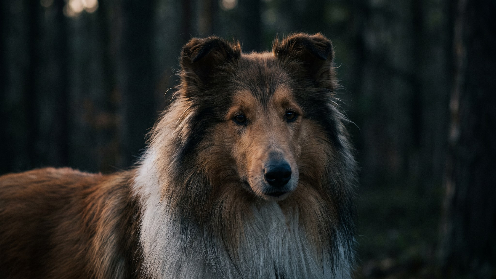

Бородатого колли часто берут за внешность — лохматый, улыбчивый, похож на плюшевую игрушку. А через полгода хозяин обнаруживает под шубой неутомимого пастуха, который сводит с ума соседей от скуки и за один день скатывает шерсть в войлок на лапах и за ушами. Бородач — отличная собака, но ровно для того, кто готов к двум вещам сразу. Разберём к каким — чтобы восторг от щенка не сменился разочарованием.
🐾 Ваш питомец — бородатый колли?
Заведите профиль в AnimaLife: приложение запомнит породу, возраст и вес и будет подсказывать по уходу именно для неё. Вопросы AI-ветеринару — круглосуточно и бесплатно.
Завести профиль → Завести в MAX →
У вас iPhone? AnimaLife есть в App Store
Бородатый колли выводился в Шотландии как пастушья собака для работы в любую погоду. Отсюда темперамент: энергичный, выносливый, самостоятельный и при этом очень контактный. Основное, что стоит знать:
Длинная двойная шерсть бородача — красивая и очень требовательная. Без системы она за дни сваливается в колтуны, особенно в «трущихся» местах: за ушами, под мышками, на лапах, на бороде после еды и питья.
Идеально — то, где работают и тело, и голова: длинные прогулки с обнюхиванием, поисковые игры, аджилити, фристайл, пастушьи дисциплины. Короткие тренировки каждый день держат его в балансе лучше, чем один марш-бросок на выходных. Скучающий бородач шумный и изобретательный — это не каприз, а невыполненная потребность.
Бородатый колли хорош для активной семьи, готовой гулять в любую погоду и выделить время на шерсть. Он отлично ладит с детьми и редко бывает агрессивен. Но для тех, кто ищет спокойную собаку «полежать рядом» или не готов к еженедельному уходу за шубой, это не лучший выбор — честнее признать это до покупки щенка, а не после.
🐾 У вас бородатый колли?
AnimaLife соберёт уход под породу: к каким болезням есть склонность, что проверять по возрасту, чем кормить и когда пора к врачу. Бесплатно, прямо в мессенджере.
Собрать план ухода → Собрать в MAX →
У вас iPhone? AnimaLife есть в App Store
🐾 Понравился разбор?
Подпишитесь на канал — каждый день разбираем по одному тревожному симптому у кошек и собак: что в пределах нормы, а когда пора к врачу. Подпишитесь, чтобы не пропустить разбор, который может спасти здоровье вашего питомца.
Материал носит информационный характер и не заменяет очную консультацию ветеринара.